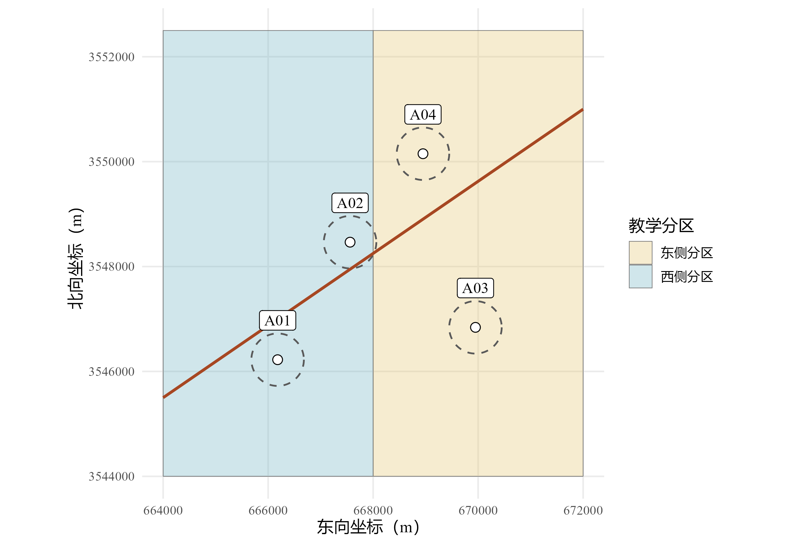
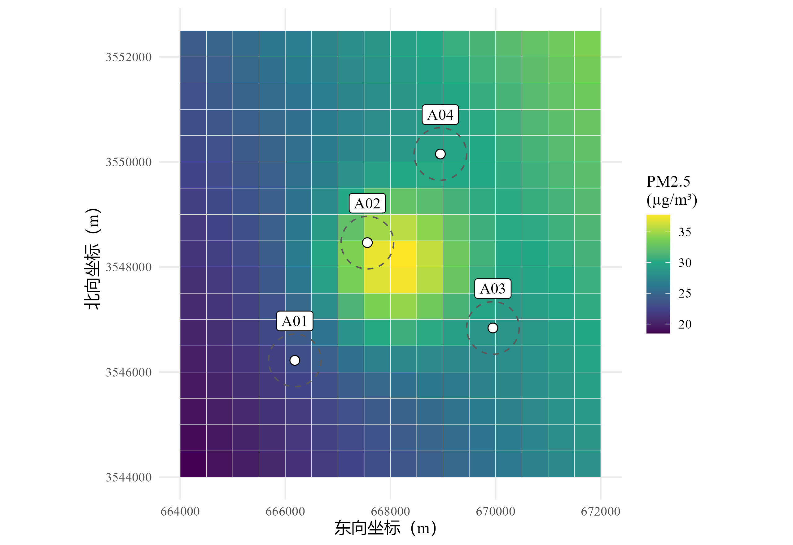
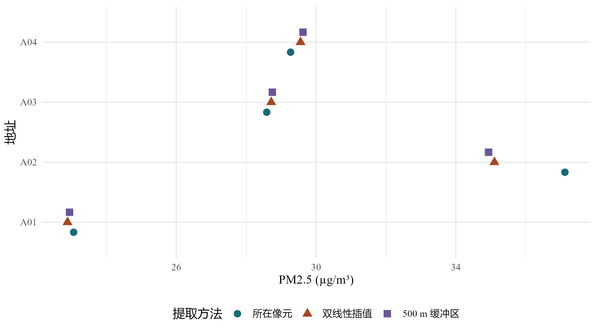
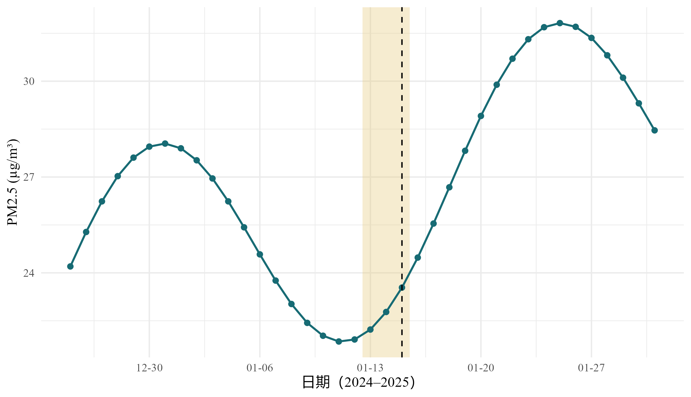
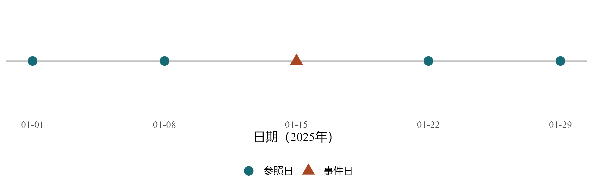

library(sf)
library(terra)
library(dplyr)
library(tidyr)
library(purrr)
library(ggplot2)
library(readr)
library(stringr)
library(lubridate)
theme_set(theme_minimal(base_size = 12, base_family = "Times New Roman"))
dir.create("geocoding-output", showWarnings = FALSE)从地址到环境暴露：sf、地理编码与暴露匹配
面向零基础研究生的 R 分步教程
特殊应用
环境流行病学
空间数据
从点线面、坐标系和地址质量检查开始，用可运行的小型模拟数据完成行政区、道路距离、缓冲区和逐日污染栅格匹配，进一步构建滞后暴露及病例交叉设计的日期表。
先明确：我们要得到什么
假设你拿到一张住院记录表，包含研究对象编号、居住地址和住院日期，同时下载了一套逐日空气污染数据。接下来要回答的第一个问题不是“用哪个回归模型”，而是：怎样给这条住院记录找到正确地点、正确日期的环境暴露值？
这篇教程把这个任务拆成三部分。第一部分学习 sf，让 R 认识点、线和面；第二部分学习地理编码，把文字地址转成可核查的地理位置；第三部分学习暴露匹配，把位置和日期与环境数据对应起来。贯穿全文的是同一套小型教学数据，不需要患者资料、商业密钥或大型污染数据库，就能运行核心流程。
你将得到一张“每条事件记录一行”的表，以及一张“每个地址每天一行”的暴露表。前者可以继续用于流行病学分析，后者可以复用到不同时间窗。本文止于暴露变量构建，不用几个模拟对象估计健康效应。
输入和输出各长什么样
动手之前先看清起点和终点。起点是一张普通的事件表，没有任何坐标：
event_id |
person_id |
event_date |
address_raw |
|---|---|---|---|
| E01 | P01 | 2025-01-15 | 教学市 甲路1号 |
| E02 | P02 | 2025-01-16 | 教学市乙路2号 |
| … | … | … | … |
终点仍是每条事件一行，但多出了位置状态和暴露变量。各列在正文中由下列步骤产生：
| 输出列 | 含义 | 来自哪一部分 |
|---|---|---|
address_id |
这条事件对应哪个待核查地址 | 第二部分：地址表 |
location_status |
位置能否用于匹配，不能时说明原因 | 第二部分：质量检查 |
pm25_lag0、pm25_lag1、pm25_lag2 |
事件当天、前 1 天、前 2 天的住址所在像元浓度 | 第三部分：按地址和日期提取 |
pm25_mean_lag02 |
当天至前 2 天共 3 天的平均值 | 第三部分：时间窗汇总 |
n_expected、n_valid |
时间窗应有天数与实际有值天数 | 第三部分：时间窗汇总 |
中间要跨过三道关口：文字地址变成坐标（地理编码）、坐标变成能计算的空间对象（sf 与坐标系）、空间对象与某一天的环境数据对上（提取与日期连接）。任何一道关口出错，R 通常都不会报错，只会给出一个看起来正常的数字。所以本文在每一步之后都安排了核对，核对所占的篇幅不比计算少。
术语速查
下表列出全文反复出现的词。现在不需要记住，读到不明白的地方再回来查。
| 术语 | 一句话解释 |
|---|---|
| 矢量（vector） | 用点、线、面表达位置的数据，例如住址、道路、行政区 |
| 栅格（raster） | 把空间切成规则格子、每格存一个数值的数据，例如某天的污染浓度图 |
| 像元（cell，也称 pixel） | 栅格中的一个格子 |
| 分辨率（resolution） | 一个像元的边长，例如 1 km；数值越小，格子越细 |
| 坐标参考系（coordinate reference system，CRS） | 规定坐标数字对应地球上哪个位置的一套约定 |
| EPSG 代码 | CRS 的公共编号，例如 4326 表示 WGS 84 经纬度 |
| 投影（projection） | 把弯曲的地球表面表示到平面上的方法，投影坐标常以米为单位 |
| 缓冲区（buffer） | 以某个位置为中心、按指定距离向外扩出的范围 |
| 地理编码（geocoding） | 把文字地址解析为坐标的过程 |
| 提取（extract） | 读出某个位置或某个范围内的栅格数值 |
| 滞后（lag） | 相对于事件日向前数的天数，lag1 即前一天 |
| 暴露时间窗（exposure window） | 为构建暴露变量而规定的日期范围，例如当天至前 2 天 |
注记学习材料与运行方式
所有地址、边界、道路和暴露数值均为教学构造。坐标位于南京附近，仅用于演示空间运算，不对应患者、真实住址或实际空气质量。本文不会调用在线地理编码服务。
下载完整 R 示例；下载教学数据与代码包。建议先顺序阅读并逐块运行，再用脚本从头复现。代码包中的说明文件解释运行方法和输出位置。
三种典型应用
短期空气污染与急性事件。 为每次住院匹配居住地当天、前一天或前数天的 PM₂.₅ 浓度。需要逐日数据，还要保证滞后日期落在暴露数据覆盖期内。
长期居住环境与队列结局。 为每位研究对象计算基线前一年或随访期间的平均暴露。需要明确住址有效期、迁居记录和时间加权方式，不能直接把入组当天的污染值当作长期暴露。
绿地或交通环境。 计算住址周围一定半径内的绿地比例、植被指数均值或到主要道路的距离。缓冲半径、道路定义和遥感影像季节都应来自研究问题，不能根据结果是否显著来挑选。
居住地环境浓度是一种暴露代理指标。它没有自动包含室内环境、通勤、职业活动及个体呼吸量，因此不能直接解释为个人吸入剂量。暴露评估还需考虑接触的地点、持续时间和活动模式，参见 EPA 人体暴露评估指南。
推荐的阅读顺序
| 学习阶段 | 要解决的问题 | 学完后的检查点 |
|---|---|---|
第一部分：sf |
经纬度怎样成为地图上的点？怎样计算空间关系？ | 能解释 geometry、CRS 和米的含义 |
| 第二部分：地理编码 | 地址怎样变成坐标？定位失败怎么办？ | 能区分请求成功、返回坐标和可用于研究 |
| 第三部分：暴露匹配 | 怎样取出该地点、该日期的暴露？ | 能核对位置、日期、单位和匹配键 |
| 进阶：真实数据 | 大文件、多年份、迁居和病例交叉设计怎么办？ | 能列出需要补充的数据及不能擅自作出的决定 |
运行前准备：只需要这些基础
R、RStudio 与代码的最小知识
R 是计算语言；RStudio 或 Positron 是编写和运行代码的工作界面。新建一个空文件夹作为练习目录，在其中建立 R 项目，然后新建 R 脚本。把代码按正文顺序复制到脚本中，选中代码后运行。不要跳过前面的对象创建步骤。
先认识五种写法：x <- ... 把结果保存为对象 x；fun(...) 调用函数；data$column 取出一列；|> 把左侧结果交给右侧函数；# 后面是注释。NA 表示缺失，不能当成数字 0。"2025-01-15" 是字符串，而 as.Date("2025-01-15") 是日期，后者才能安全地加减天数。
下方安装命令只在缺包时运行一次。已有项目环境时沿用其包版本，不需要为了学习本文升级所有包。Windows 通常可以使用 CRAN 提供的二进制包；若安装要求额外系统工具，应先检查当前 R 版本及包支持情况。
install.packages(c(
"sf", "terra", "dplyr", "tidyr", "purrr", "ggplot2",
"readr", "stringr", "lubridate", "httr2", "knitr", "ragg"
), repos = "https://cloud.r-project.org")安装是环境准备，不在教程渲染时自动执行。接着加载本次实际使用的包。
输出统一放在练习目录下的 geocoding-output/。同一次练习重新运行会更新其中的教学文件；不要把真实原始数据放到这个输出目录。
本文在 R 4.5.2、sf 1.0-23、terra 1.8-86、dplyr 1.1.4、tidyr 1.3.2 和 purrr 1.2.0 环境中验证。sf 处理矢量对象，terra 处理栅格及其提取；这里采用它们各自的公开接口，不要求把全部数据都转换为同一种对象。包的维护信息与许可证分别见 sf 的 CRAN 页面和 terra 的 CRAN 页面。
第一部分：让 R 认识地理位置
第 1 步：分清矢量和栅格
矢量数据用几何对象表达位置。住址可表示为一个点，道路可表示为一条线，行政区可表示为一个面。每个对象还可以带有属性，例如地址编号、道路等级和区县名称。
栅格数据把空间划分成规则像元，每个像元存一个数值。一天的 PM₂.₅ 可以是一张栅格，连续一个月可以是多张相同网格、不同日期的栅格。像元值可能是模型预测的平均浓度，并不是像元内每个家庭的实测浓度。
| 研究对象 | 常用形式 | R 中的常用对象 | 需要特别核对 |
|---|---|---|---|
| 住址、监测站 | 点 POINT |
sf |
定位精度、坐标系 |
| 道路、河流 | 线 LINESTRING |
sf |
道路等级、几何是否完整 |
| 区县、绿地范围 | 面 POLYGON 或 MULTIPOLYGON |
sf |
边界年份、重叠和无效几何 |
| 污染、温度、植被指数 | 栅格 | SpatRaster |
单位、像元大小、日期、缺失码 |
sf 是 Simple Features for R，实现了简单要素标准。对初学者来说，可以先把一个 sf 对象理解成“普通数据表加一列几何信息”。更精确地说，整张表是 sf，几何列是 sfc，其中单个几何对象是 sfg。sf 官方入门给出了这些对象的结构。
第 2 步：把普通表变成点
先使用四个已经知道坐标的教学地点。这一步只演示空间数据结构，不涉及地址查询。lon 是经度，lat 是纬度。
locations <- tibble(
address_id = c("A01", "A02", "A03", "A04"),
lon = c(118.760, 118.775, 118.800, 118.790),
lat = c(32.040, 32.060, 32.045, 32.075)
)
homes_ll <- st_as_sf(
locations, coords = c("lon", "lat"), crs = 4326, remove = FALSE
)
homes_llSimple feature collection with 4 features and 3 fields
Geometry type: POINT
Dimension: XY
Bounding box: xmin: 118.76 ymin: 32.04 xmax: 118.8 ymax: 32.075
Geodetic CRS: WGS 84
# A tibble: 4 × 4
address_id lon lat geometry
* <chr> <dbl> <dbl> <POINT [°]>
1 A01 119. 32.0 (118.76 32.04)
2 A02 119. 32.1 (118.775 32.06)
3 A03 119. 32.0 (118.8 32.045)
4 A04 119. 32.1 (118.79 32.075)输出中的 POINT (118.76 32.04) 表示一个点的几何坐标。coords = c("lon", "lat") 明确了先经度、后纬度；remove = FALSE 保留原来的两列，便于对照。crs = 4326 的前提是我们知道输入属于 WGS 84 经纬度坐标。
这里最重要的不是记住 4326，而是明白：代码没有检查输入坐标是否真的属于 WGS 84。 如果把其它坐标直接贴上这个标签，R 仍可能正常画图，但位置已经错了。
经度表示东西方向的位置，取值在 -180 到 180 之间；纬度表示南北方向的位置，取值在 -90 到 90 之间。中国境内的经度大致在 73° 至 135°，纬度大致在 4° 至 54°，所以国内数据里较大的那个数通常是经度。很多表格和地图网站习惯写成“纬度, 经度”，而 sf 要求先 x 后 y，也就是先经度后纬度。把顺序写反是初学者最常见的错误，下面故意犯一次，看 R 的反应。
homes_swapped <- st_as_sf(locations, coords = c("lat", "lon"), crs = 4326)
st_bbox(homes_swapped) xmin ymin xmax ymax
32.040 118.760 32.075 118.800 代码没有报错，也没有警告。但范围框里 ymin 和 ymax 约为 118，而纬度不可能超过 90。创建点之后立刻看 st_bbox()，对照自己研究区大致的经纬度范围，这类错误在第一步就能发现；拖到提取暴露时才发现，往往只能看到一整列 NA 而不知道原因。
第 3 步：理解坐标参考系
坐标参考系（coordinate reference system，CRS）规定坐标数字怎样对应到地球上的位置。只给出“118.76、32.04”还不够，还需要知道它采用什么坐标体系。
经纬度用角度表示位置，投影坐标常用米表示平面位置。地球表面弯曲，投影把它表示到平面上，因而存在变形。距离和面积计算需要选择适合研究范围的坐标系，不能看到单位是米就认为任何投影都同样合适。
| 操作 | 实际含义 | 坐标数字是否改变 |
|---|---|---|
st_as_sf(..., crs = ...) |
按已知来源为输入坐标声明 CRS | 不因声明而转换 |
st_set_crs(x, ...) |
设置或纠正 CRS 标签 | 不改变 |
st_transform(x, ...) |
从正确的原 CRS 转到目标 CRS | 通常改变 |
后两者的区别可在 CRS 文档和坐标转换文档中核对。不要先删掉 CRS，再贴上另一个 CRS 来消除警告；这只会让错误更难被发现。
对于本文南京附近的小范围示例，采用 WGS 84 / UTM 50N（EPSG:32650），坐标单位为米。这是局部演示的选择，不是全国统一的距离计算方案。
homes_m <- st_transform(homes_ll, 32650)
tibble(
address_id = homes_m$address_id,
easting_m = st_coordinates(homes_m)[, "X"],
northing_m = st_coordinates(homes_m)[, "Y"]
)# A tibble: 4 × 3
address_id easting_m northing_m
<chr> <dbl> <dbl>
1 A01 666181. 3546224.
2 A02 667561. 3548464.
3 A03 669949. 3546840.
4 A04 668949. 3550151.st_crs(homes_m)$units_gdal[1] "metre"现在坐标变成较大的米制数字，这是正常现象。位置没有凭空移动，只是同一位置换了一种表达方式。homes_m$lon 与 homes_m$lat 仍是原表属性；转换更新的是几何列，不会自动改写所有同名数字列。需要当前几何坐标时使用 st_coordinates()。
“声明”和“转换”的差别用数字看最清楚。下面把同样的经纬度数字直接贴上 EPSG:32650 的标签，与正确转换的结果放在一起比较。
homes_mislabelled <- st_as_sf(locations, coords = c("lon", "lat"), crs = 32650)
rbind(
贴错标签 = st_coordinates(homes_mislabelled)[1, ],
正确转换 = st_coordinates(homes_m)[1, ]
) X Y
贴错标签 118.76 32.04
正确转换 666180.71 3546223.72贴错标签的那一行，坐标仍是 118.76 和 32.04，只是 R 现在把它们当成米：这个点被放到了距离该投影坐标原点约一百米的地方，离南京有数千公里。正确转换的那一行才是 A01 在 UTM 50N 中的位置。两种写法都不会报错，区别只有靠检查坐标数值或范围才能看出来。
换成自己的研究区时，UTM 带号可以由经度算出：每 6 度一个带，北半球的 EPSG 代码是 32600 加带号，南半球是 32700 加带号。
utm_zone <- floor((mean(locations$lon) + 180) / 6) + 1
c(utm_zone = utm_zone, epsg = 32600 + utm_zone)utm_zone epsg
50 32650 算出的 50 带和 32650 与前面使用的一致。这个算法只适合研究区落在一个带内的情形。研究范围跨越多个带、覆盖全省乃至全国时，单一 UTM 带的变形会随着远离中央经线而增大，应当根据计算目标（距离、面积或方向）另选合适的投影，或直接在经纬度上使用球面计算，并把选择写进方法记录。
sf 在经纬度对象上也可以通过球面引擎计算距离和缓冲区，不能笼统地说“经纬度永远不能算距离”。本文先投影，是为了让新手清楚地看到单位和局部平面操作。缓冲区的单位与引擎规则还取决于 CRS 和 sf_use_s2()。
第 4 步：检查、筛选和读写 sf
读取空间数据后，先看范围、几何类型和有效性，再叠图。范围如果完全偏离研究区，优先检查经纬度顺序、单位和原始 CRS。
st_bbox(homes_ll) xmin ymin xmax ymax
118.760 32.040 118.800 32.075 st_geometry_type(homes_ll)[1] POINT POINT POINT POINT
18 Levels: GEOMETRY POINT LINESTRING POLYGON MULTIPOINT ... TRIANGLEst_is_valid(homes_ll)[1] TRUE TRUE TRUE TRUEhomes_ll |>
filter(address_id %in% c("A01", "A02")) |>
select(address_id)Simple feature collection with 2 features and 1 field
Geometry type: POINT
Dimension: XY
Bounding box: xmin: 118.76 ymin: 32.04 xmax: 118.775 ymax: 32.06
Geodetic CRS: WGS 84
# A tibble: 2 × 2
address_id geometry
<chr> <POINT [°]>
1 A01 (118.76 32.04)
2 A02 (118.775 32.06)st_drop_geometry(homes_ll)# A tibble: 4 × 3
address_id lon lat
* <chr> <dbl> <dbl>
1 A01 119. 32.0
2 A02 119. 32.1
3 A03 119. 32.0
4 A04 119. 32.1select(address_id) 后几何列通常仍保留，这是 sf 的正常行为；要得到普通表，显式使用 st_drop_geometry()。st_is_valid() 为 TRUE 只说明几何结构有效，不证明地址定位正确。
我们把四个点写入 GeoPackage，再读回来。它可以把坐标系、几何和属性保存在一个文件里。
st_write(
homes_ll, "geocoding-output/homes_demo.gpkg",
layer = "homes", delete_layer = TRUE, quiet = TRUE
)
homes_read <- st_read(
"geocoding-output/homes_demo.gpkg", layer = "homes", quiet = TRUE
)
stopifnot(
nrow(homes_read) == nrow(homes_ll),
st_crs(homes_read) == st_crs(homes_ll)
)delete_layer = TRUE 只用于重建本例自己的 homes 教学图层。真实文件先复制或换输出名。读 Shapefile 同样可用 st_read()，但 .shp、.shx、.dbf、.prj 等文件通常必须一起保留；缺少 .prj 时不能猜坐标系。CSV 可保存经纬度列，却不能替代完整的空间元数据。
实际工作中，坐标更常来自一张 CSV 或由 Excel 另存的表。下面把教学地点存成 CSV 再读回来，模拟“从自己的文件开始”的情形。读入时显式指定每一列的类型，不让软件自行猜测。
write_csv(locations, "geocoding-output/locations_demo.csv")
locations_read <- read_csv(
"geocoding-output/locations_demo.csv",
col_types = cols(
address_id = col_character(), lon = col_double(), lat = col_double()
)
)
homes_from_csv <- st_as_sf(
locations_read, coords = c("lon", "lat"), crs = 4326, remove = FALSE
)
stopifnot(
!anyNA(locations_read$lon), !anyNA(locations_read$lat),
all(st_coordinates(homes_from_csv) == st_coordinates(homes_ll))
)读入自己的表时有三处值得先看。编号列要按字符读入，否则 00123 这样的编号会丢掉前导零，之后无法与其它表连接。经纬度列必须是数值；如果原表里混有“无”“待查”之类的文字，按数值读入时这些单元格会变成 NA 并给出解析提示，应回到原表核对，而不是忽略提示。st_as_sf() 不接受坐标缺失的行，缺坐标的记录要先单独留存并标注原因，再对有坐标的部分创建点。第二部分用 location_status 一列演示怎样保留并标注这些记录。
第 5 步：创建面、道路与 500 m 缓冲区
这一节生成两个人工分区、一条人工道路和每个点周围的 500 m 缓冲区。图的用途是看清几何关系，不代表真实行政区划或道路。
study_bbox <- st_bbox(homes_m)
study_bbox[c("xmin", "ymin")] <-
floor(study_bbox[c("xmin", "ymin")] / 500) * 500 - 2000
study_bbox[c("xmax", "ymax")] <-
ceiling(study_bbox[c("xmax", "ymax")] / 500) * 500 + 2000
study_area <- st_as_sfc(study_bbox)
zones <- st_sf(
zone_id = c("West", "East"),
area_pm25 = c(24, 32),
geometry = st_make_grid(study_area, n = c(2, 1))
)
road <- st_sf(
road_id = "R01",
geometry = st_sfc(st_linestring(matrix(
c(study_bbox["xmin"], study_bbox["ymin"] + 1500,
study_bbox["xmax"], study_bbox["ymax"] - 1500),
ncol = 2, byrow = TRUE
)), crs = st_crs(homes_m))
)
buffers_500 <- st_buffer(homes_m, dist = 500)st_make_grid(..., n = c(2, 1)) 将范围分成左右两个面。st_buffer() 根据当前米制几何创建 500 m 缓冲区；半径是教学设定，并非绿地研究的统一标准。
地图中点、线、面和圆形区域分别代表什么？先观察 A01 与道路的关系，再看 A04 的缓冲区覆盖了哪里。
geometry_map <- ggplot() +
geom_sf(data = zones, aes(fill = zone_id), color = "grey45", alpha = 0.35) +
geom_sf(data = buffers_500, fill = NA, linetype = 2, linewidth = 0.6) +
geom_sf(data = road, color = "#A74722", linewidth = 1) +
geom_sf(data = homes_m, shape = 21, fill = "white", size = 3) +
geom_sf_label(data = homes_m, aes(label = address_id), nudge_y = 750, size = 4) +
scale_fill_manual(values = c(West = "#78B7C5", East = "#E6C978"),
labels = c(West = "西侧分区", East = "东侧分区")) +
coord_sf(datum = st_crs(homes_m)) +
labs(x = "东向坐标（m）", y = "北向坐标（m）", fill = "教学分区")
geometry_map
圆形区域面积约为 平方米，但它不意味着研究对象在区域内均匀活动。道路距离和缓冲区暴露是不同变量；图上“离线近”不能直接解释为“污染必然更高”。
第 6 步：给点匹配所在区域
普通连接按编号匹配；空间连接按“点是否位于面内”等几何关系匹配。先检查每个点匹配了几个区域，避免一个点落在重叠面中而使记录膨胀。
zone_hits <- st_intersects(homes_m, zones)
tibble(address_id = homes_m$address_id, n_zones = lengths(zone_hits))# A tibble: 4 × 2
address_id n_zones
<chr> <int>
1 A01 1
2 A02 1
3 A03 1
4 A04 1stopifnot(all(lengths(zone_hits) == 1L))
homes_zone <- st_join(homes_m, zones, join = st_intersects, left = TRUE)
homes_zone |>
st_drop_geometry() |>
select(address_id, zone_id, area_pm25)# A tibble: 4 × 3
address_id zone_id area_pm25
<chr> <chr> <dbl>
1 A01 West 24
2 A02 West 24
3 A03 East 32
4 A04 East 32这里每个地址都得到一个分区及其演示用区域浓度。left = TRUE 保留匹配不到区域的点，属性会是 NA。实际项目若出现 0 个匹配，检查边界、坐标系或研究区域；若出现多个匹配，检查面重叠或公共边界，不能直接取第一条。空间连接文档列出了可选的几何关系。
st_within() 对“恰好在边界上”的点与 st_intersects() 行为不同。边界年份、行政区调整和边界点归属要单独确认。经纬度包围盒只是快速粗查，不能代替省界或市界多边形。
第 7 步：计算道路距离和缓冲区面积
road_distance <- st_distance(homes_m, road)
distance_table <- tibble(
address_id = homes_m$address_id,
distance_to_road_m = as.numeric(road_distance[, 1]),
buffer_area_km2 = as.numeric(st_area(buffers_500)) / 1e6
)
knitr::kable(distance_table, digits = 3)| address_id | distance_to_road_m | buffer_area_km2 |
|---|---|---|
| A01 | 639.058 | 0.785 |
| A02 | 425.391 | 0.785 |
| A03 | 2265.700 | 0.785 |
| A04 | 1028.369 | 0.785 |
st_distance() 返回带单位的距离矩阵。本例只有一条道路，所以取第一列；如果有很多道路，要先确定“最近的符合定义的道路”，不能任意取第一列。这里计算直线距离，不是沿道路网络行驶的距离。
缓冲区面积略受圆弧近似影响，接近 0.785 km² 属正常结果。大范围面积计算应选择适合的面积方法，不能将本文局部 UTM 示例机械用于跨省或全国研究。
第 8 步：为每个住址找到最近的监测站
很多研究手里没有污染栅格，只有若干监测站的逐日记录，这时第一个空间操作是“每个住址离哪个站最近、有多远”。下面构造三个教学站点。st_nearest_feature() 返回最近对象在站点表中的行位置，再用这个位置取出站点编号和对应距离。
stations <- tibble(
station_id = c("S1", "S2", "S3"),
lon = c(118.750, 118.790, 118.810),
lat = c(32.050, 32.030, 32.080)
) |>
st_as_sf(coords = c("lon", "lat"), crs = 4326) |>
st_transform(st_crs(homes_m))
nearest_row <- st_nearest_feature(homes_m, stations)
nearest_station <- tibble(
address_id = homes_m$address_id,
station_id = stations$station_id[nearest_row],
distance_m = as.numeric(
st_distance(homes_m, stations[nearest_row, ], by_element = TRUE)
)
)
knitr::kable(nearest_station, digits = 0)| address_id | station_id | distance_m |
|---|---|---|
| A01 | S1 | 1456 |
| A02 | S1 | 2608 |
| A03 | S2 | 1913 |
| A04 | S3 | 1968 |
每个住址得到一个站点编号和一段直线距离。by_element = TRUE 让第 1 个住址只与它自己的最近站点配对计算，而不是生成全部住址与全部站点的距离矩阵。得到 station_id 之后，站点的逐日浓度按“站点编号加日期”连接到住址，做法与第三部分的日期连接相同。
最近不等于有代表性。 距离表应当保留并报告：住址离最近站点几十公里时，这个站的读数能否代表住址环境需要研究者判断，常见做法是在方案中预先规定最大匹配距离，超出者标记为未匹配，而不是照常赋值。站点类型（城市背景站、交通站、工业站）、中间是否隔着山体或水体、站点在研究期间是否搬迁或停运，都会影响代表性，这些信息要从监测网络的说明中获取，距离计算本身无法提供。
第 9 步：计算缓冲区内的绿地占比
开头提到的“住址周围绿地比例”是面与面的运算：求缓冲区与绿地范围重叠部分的面积，再除以缓冲区面积。下面在 A03 附近构造一块矩形教学绿地，逐个缓冲区计算重叠面积。
a03_xy <- st_coordinates(homes_m)[homes_m$address_id == "A03", ]
green <- st_as_sfc(st_bbox(
c(xmin = a03_xy[["X"]] - 200, xmax = a03_xy[["X"]] + 900,
ymin = a03_xy[["Y"]] - 900, ymax = a03_xy[["Y"]] + 250),
crs = st_crs(homes_m)
))
green_m2 <- map_dbl(seq_len(nrow(buffers_500)), function(i) {
overlap <- st_intersection(st_geometry(buffers_500)[i], green)
sum(as.numeric(st_area(overlap)))
})
green_share <- tibble(
address_id = buffers_500$address_id,
green_m2 = green_m2,
green_share = green_m2 / as.numeric(st_area(buffers_500))
)
knitr::kable(green_share, digits = c(0, 0, 3))| address_id | green_m2 | green_share |
|---|---|---|
| A01 | 0 | 0.00 |
| A02 | 0 | 0.00 |
| A03 | 463048 | 0.59 |
| A04 | 0 | 0.00 |
st_intersection() 返回两个几何的重叠部分；没有重叠时结果为空，面积之和为 0。只有 A03 的缓冲区与这块绿地相交，其余住址的占比是 0。这里的 0 是一个真实的计算结果，含义是“缓冲区内没有这块绿地”，与“不知道”的 NA 不同；如果绿地图层没有覆盖某个住址所在的区域，那里应当是 NA 而不是 0，这要靠核对图层覆盖范围来区分。
占比的分母在本例是完整缓冲区面积。缓冲区有一部分落在水面或研究区外时，分母用完整面积还是有效陆地面积，会得到不同的变量，需要事先定义。实际的绿地图层通常含有大量多边形，彼此可能重叠，直接求和会重复计算面积，要先合并再求交。若绿地信息来自栅格（例如植被指数），则改用第三部分的缓冲区提取方法。
提示第一部分小结
到这里，你应该能回答下面几个问题。答不上来的，回到对应步骤再运行一遍代码。
sf对象比普通数据表多了什么？（第 1、2 步）- 创建点之后为什么要立刻看
st_bbox()？（第 2 步） st_set_crs()与st_transform()哪一个会改变坐标数字？（第 3 步）- 空间连接之后行数变多，最可能的原因是什么？（第 6 步）
- 最近站点的距离为什么必须和站点编号一起保存？（第 8 步）
第二部分：把地址变成可核查的位置
第 10 步：理解地理编码到底做了什么
地理编码（geocoding）把文字地址解析成地理位置；逆地理编码把坐标转换成附近的地址描述。它们不等于现场定位，也不保证返回的是研究对象真正居住的位置。
对于“某省某市某区某街道”这样的地址，服务可能返回街道或区域代表点。小数点后有很多位，只说明数字写得细，不代表已经定位到楼栋。逆地理编码能用于辅助核查，但同一个服务“先编码、再反查一致”不是独立的准确性验证。
开始前应与研究团队确认：需要的是居住地址、工作地址、学校地址还是就医地点；地址对应哪个时间段；街道级定位能否满足目标暴露的空间尺度。住址缺失不能直接用就诊医院替代，因为两者代表不同的暴露地点。
第 11 步：准备地址表，同时保留事件表
一位研究对象可以有多次事件，多位研究对象也可以住在同一地址。因此至少分清三种编号：person_id 标识人，event_id 标识一次事件，address_id 标识一个待核查地址。后续不能用行号代替这些编号。
events_raw <- tibble(
event_id = sprintf("E%02d", 1:7),
person_id = c("P01", "P02", "P03", "P04", "P05", "P01", "P06"),
event_date = as.Date(c(
"2025-01-15", "2025-01-16", "2025-01-17", "2025-01-18",
"2025-01-19", "2025-01-22", "2025-01-20"
)),
address_raw = c(
"教学市 甲路1号", "教学市乙路2号", "教学市丙路3号",
"教学市丁路4号", "教学市某区", "教学市 甲路1号", ""
)
)
events <- events_raw |>
mutate(address_clean = na_if(str_squish(address_raw), ""))
address_book <- events |>
filter(!is.na(address_clean)) |>
distinct(address_clean) |>
mutate(address_id = sprintf("A%02d", row_number()))
events <- events |>
left_join(address_book, by = join_by(address_clean), relationship = "many-to-one")
knitr::kable(events)| event_id | person_id | event_date | address_raw | address_clean | address_id |
|---|---|---|---|---|---|
| E01 | P01 | 2025-01-15 | 教学市 甲路1号 | 教学市 甲路1号 | A01 |
| E02 | P02 | 2025-01-16 | 教学市乙路2号 | 教学市乙路2号 | A02 |
| E03 | P03 | 2025-01-17 | 教学市丙路3号 | 教学市丙路3号 | A03 |
| E04 | P04 | 2025-01-18 | 教学市丁路4号 | 教学市丁路4号 | A04 |
| E05 | P05 | 2025-01-19 | 教学市某区 | 教学市某区 | A05 |
| E06 | P01 | 2025-01-22 | 教学市 甲路1号 | 教学市 甲路1号 | A01 |
| E07 | P06 | 2025-01-20 | NA | NA |
这段代码只去掉首尾空白、合并连续空白，没有擅自删除楼栋号、数字或标点。两个相同地址共用 A01，但两条事件都保留。空地址仍留在 events 中，以便统计失败原因。
本例用顺序生成教学 address_id。正式项目应持久保存这张地址登记表：新增地址获得新编号，不能每次排序后重新编号，否则旧坐标、缓存和新地址可能错配。地址清洗也要保留原文，并抽查不同地址是否被错误合并。
第 12 步：先练习离线结果表
下面人为构造一个已经核查的地理编码结果表。A01–A04 的坐标直接来自前面的教学地点；A05 只有区级定位，暂不进入点位提取。它不是任何服务的真实返回记录。
geocode_review <- bind_rows(
locations |>
mutate(
match_level = "教学门址", coord_source = "WGS84",
review_status = "通过"
),
tibble(
address_id = "A05", lon = 118.780, lat = 32.055,
match_level = "教学区级代表点", coord_source = "WGS84",
review_status = "待复核"
)
)
events_geo <- events |>
left_join(geocode_review, by = join_by(address_id), relationship = "many-to-one") |>
mutate(location_status = case_when(
is.na(address_clean) ~ "地址缺失",
is.na(lon) | is.na(lat) ~ "无坐标",
review_status != "通过" ~ "定位待复核",
!between(lon, -180, 180) | !between(lat, -90, 90) ~ "坐标越界",
TRUE ~ "可匹配"
))
events_geo |> count(location_status, name = "事件数")# A tibble: 3 × 2
location_status 事件数
<chr> <int>
1 可匹配 5
2 地址缺失 1
3 定位待复核 1本例 7 条事件中，5 条可进行点位匹配，1 条定位待复核，1 条地址缺失。这不是“删除了两条”，而是给每条记录注明当前状态。空间处理暂时使用已通过核查的地址，最终输出仍回接全部事件。
第 13 步：了解真实在线查询的输入与输出
在线地理编码通常通过应用程序接口（application programming interface，API）完成。调用时至少需要地址和开发密钥；服务器返回 JSON 格式的结构化结果。JSON 可以理解成一组有名称、可能层层嵌套的字段。
以腾讯位置服务的地址解析为例，location$lng 是经度，location$lat 是纬度，status 是业务状态，level 表示定位层级；还应保留行政区、匹配标题、查询日期及服务来源。字段及含义以腾讯位置服务维护的地址接口说明为准，不能把不同供应商的评分直接比较。
先写一个可以处理成功和失败响应的函数。它只解析输入，不发送网络请求，因此可以直接运行。
parse_tencent <- function(body, address_id) {
status <- body$status
if (is.null(status)) status <- NA_integer_
result <- body$result
lon <- result$location$lng
lat <- result$location$lat
level <- result$level
if (is.null(lon)) lon <- NA_real_
if (is.null(lat)) lat <- NA_real_
if (is.null(level)) level <- NA_integer_
tibble(
address_id = address_id,
api_status = as.integer(status),
lon_source = as.numeric(lon), lat_source = as.numeric(lat),
level = as.integer(level), coord_source = "GCJ-02",
request_ok = !is.na(status) && status == 0,
has_coordinates = is.finite(lon) && is.finite(lat)
)
}
mock_success <- list(
status = 0L,
result = list(location = list(lng = 118.78, lat = 32.06), level = 9L)
)
mock_failure <- list(status = 120L)
bind_rows(
parse_tencent(mock_success, "DEMO_OK"),
parse_tencent(mock_failure, "DEMO_RETRY")
)# A tibble: 2 × 8
address_id api_status lon_source lat_source level coord_source request_ok
<chr> <int> <dbl> <dbl> <int> <chr> <lgl>
1 DEMO_OK 0 119. 32.1 9 GCJ-02 TRUE
2 DEMO_RETRY 120 NA NA NA GCJ-02 FALSE
# ℹ 1 more variable: has_coordinates <lgl>第二行的坐标保持为数值型 NA。不要把 "wrong"、"Novalue" 混入经纬度列，否则整列可能变成字符。request_ok 与 has_coordinates 仍不等于“已通过研究质量核查”；定位层级和地址一致性还要继续检查。
下面的函数定义也可以执行，只有实际调用它时才会联网。它采用 httr2 组装查询参数，避免手工拼接中文 URL。密钥由环境变量读入，不打印完整请求或服务器错误正文。
query_tencent <- function(address, address_id) {
key <- Sys.getenv("TENCENT_MAP_KEY")
if (!nzchar(key)) stop("尚未设置 TENCENT_MAP_KEY。")
response <- tryCatch(
httr2::request("https://apis.map.qq.com/ws/geocoder/v1/") |>
httr2::req_url_query(address = address, key = key) |>
httr2::req_timeout(15) |>
httr2::req_perform(),
error = function(e) NULL
)
if (is.null(response)) {
return(tibble(
address_id = address_id, api_status = NA_integer_,
lon_source = NA_real_, lat_source = NA_real_, level = NA_integer_,
coord_source = "GCJ-02", request_ok = FALSE,
has_coordinates = FALSE, transport_status = "请求失败",
queried_at = as.character(Sys.time())
))
}
body <- httr2::resp_body_json(response, simplifyVector = FALSE)
parse_tencent(body, address_id) |>
mutate(transport_status = "已响应", queried_at = as.character(Sys.time()))
}函数保留请求失败状态，避免失败被当作“这个地址不存在”。JSON 格式异常会报错，应核查响应类型后处理。这里没有自动重试全部错误：限流、额度耗尽、密钥无效和地址无法识别需要不同处理。httr2 请求说明解释了 HTTP 失败的行为。
真实使用时，先在服务商控制台申请允许的服务，将密钥放入本机私有环境文件，并重新启动 R；不要把含密钥的文件提交到 Git。只在已获研究授权的条件下发送地址，健康结局、姓名、证件号和联系方式不随地址上传。居住地址本身也具有敏感性。
# 条件示例：需要自己的有效密钥及服务权限；本文未发送该请求。
one_result <- query_tencent("北京市海淀区中关村大街27号", "PUBLIC_DEMO")这个公开地点仅用于说明单次调用方式，本文不预先声称它会返回何种坐标或精度。先人工核查少量允许查询的地址，再批量处理。配额和费用会变化，应以自己的服务合同及当前控制台为准。
第 14 步：批量查询不是“把核心数开到最大”
批量工作至少分成“待查询、成功待复核、复核通过、需要重试、无法定位”几种状态。只对唯一地址查询，成功结果保存后不重复请求；重试要记录原因和次数，不能把所有失败记录都永久跳过。每批完成后按 address_id 保存，核对列名、表头与记录数。
在普通 Windows 电脑上，先顺序查询最容易检查。按实际每秒请求限额控制节奏；多个并发请求可能更快触发限流。原始记录很多时，真正减少请求量的是对地址去重，而不是盲目增加进程数。
真实地理编码表至少保留以下信息：
| 字段 | 作用 |
|---|---|
address_id、原地址、清洗地址 |
追溯请求对象及清洗变化 |
| 服务商、查询时间、请求状态 | 区分地址问题和接口问题 |
| 原始经纬度、原坐标体系 | 防止来源坐标被覆盖 |
| 匹配标题、行政区、定位层级、质量字段 | 核对是否匹配到正确地点 |
| 复核状态、复核依据、处理原因 | 区分服务返回和研究确认 |
| 目标坐标、转换方法及版本 | 追溯进入暴露匹配的坐标 |
缓存表不是无条件的真值。地址更正、行政区调整、供应商变更或坐标处理方法变更后，应明确哪些条目需要重新核查。对同一地址出现多个候选结果，比较证据后确认，不能使用 slice_head(n = 1) 随机留下一个。
第 15 步：处理 WGS 84、GCJ-02 与 BD-09
这是国内环境暴露研究最容易出现“代码没报错、地图却偏移”的环节。
WGS 84、CGCS2000、GCJ-02 和 BD-09 不能只因都写成经纬度就直接混用。前两者是大地坐标参考系统；后两者涉及地图服务使用的坐标处理。具体接口还可能因地区和产品而异，必须保存原始来源说明。
腾讯上述地址解析返回 GCJ-02 坐标。其坐标工具说明说明官方转换接口的方向，不能据此声称官方提供了反向转到 WGS 84 的能力。高德、百度或其它渠道的返回坐标也要逐一核对，不能根据文件扩展名判断。
st_transform() 不是任意互联网地图坐标的纠偏器。 将 GCJ-02 数值创建成 crs = 4326 的点，再转换为 UTM，不会消除原有偏移。st_set_crs(4326) 更不会改变坐标值。
实际研究有三条可考虑的路径：使用已核验坐标体系的 GPS 或地址数据库；使用研究机构批准并验证的转换流程；或在确实只有区域位置时，改为符合原始精度的区域暴露定义。第三条会改变暴露含义，需要研究者确认，不能由代码自动代替。
网上流传的 GCJ-02 反算代码通常是近似实现。若研究团队决定采用，应记录算法来源和版本，并用独立控制点核查残余误差及边界行为，再评估误差相对于暴露像元或道路距离的大小。本文不把未经验证的反算函数包装为通用精确转换。后续实例仅使用前面明确构造的 WGS 84 坐标。
第 16 步：完成地理编码质量检查
质量检查从地址文本、服务结果、空间位置和独立复核四层进行。地址范围合理只是起点，不等于定位正确。
首先检查缺失、经纬度顺序和坐标体系。再检查返回的省市区是否与原地址一致，是否只有城市或区县级定位。随后查看叠图，定位落在研究区之外、大量不同地址完全重合或集中在行政区代表点的情况。最后对不同定位层级、城乡地区和异常状态分层抽取地址，用独立可核查资料复核；抽查比例由研究规模和误差容忍度决定。
同时报告两个分母：地址级成功率反映地理编码工作量和质量，事件级可匹配比例反映对分析记录的影响。一个失败地址可能对应很多次就诊，二者不能互换。
address_book |>
left_join(geocode_review, by = join_by(address_id), relationship = "one-to-one") |>
count(review_status, name = "地址数")# A tibble: 2 × 2
review_status 地址数
<chr> <int>
1 待复核 1
2 通过 4events_geo |>
count(location_status, name = "事件数") |>
mutate(proportion = 事件数 / sum(事件数))# A tibble: 3 × 3
location_status 事件数 proportion
<chr> <int> <dbl>
1 可匹配 5 0.714
2 地址缺失 1 0.143
3 定位待复核 1 0.143输出应保留 A05 的待复核状态及空地址事件。正式研究还要比较可匹配与不可匹配对象的地区、年份及已知特征，评估缺失是否可能改变研究人群。不得为了提高“成功率”而把患者住址替换为医院位置。
提示第二部分小结
地理编码这一部分没有复杂的计算，难点在于区分几种容易混为一谈的状态。
- 请求成功、返回了坐标、坐标通过研究复核，是三件不同的事，要用三个字段分别记录。
- 人、事件、地址各有自己的编号；地理编码只对去重后的地址做，结果再按
address_id接回事件。 - 定位不了的记录留在表里并写明原因，不删除，也不用医院或区县中心替代。
- 互联网地图返回的坐标要先弄清属于哪个坐标体系，
st_transform()不能替你纠偏。 - 同时报告地址级和事件级两个比例。
第三部分：把位置和环境暴露对应起来
第 17 步：先选择暴露定义
同一个地址可能得到多个都能算出来、但含义不同的变量。方法选择先于提取代码。
| 方法 | 实际得到什么 | 输入与主要假设 | 检查及适用边界 |
|---|---|---|---|
所在像元值 simple |
点所在像元的原值 | 点坐标及栅格；该像元值可代表目标地点 | 受像元尺度限制，跨像元边界可能跳变 |
双线性插值 bilinear |
邻近四个像元插值得到的值 | 连续表面在局部可近似平滑 | 不适合类别值；不自动提升真实性 |
| 缓冲区平均 | 点周围指定范围的平均值 | 缓冲区、覆盖权重及有效像元 | 半径、缺失覆盖和面积权重改变含义 |
| 区域赋值 | 所在行政区或区域的汇总值 | 区域边界及同口径区域数据 | 区域内个体共享值，不能表示区内细差异 |
监测站匹配也很常见，但“最近站点”能否代表住址，需要考虑站点类型、地形、距离和数据完整性。反距离加权或克里金插值是另外的空间建模任务，要验证预测性能，不是给 extract() 换一个参数。
本文主例采用所在像元值，同时演示双线性插值和 500 m 缓冲区均值。模拟 PM₂.₅ 以 µg/m³ 为单位，500 m 网格只是教学设置。三种结果之间的差异不是谁“更准确”的证据，因为这里没有个人暴露的实测真值。
第 18 步：生成一张看得懂的污染栅格
先只研究一天。我们创建覆盖教学区域的 500 m 网格，让浓度随东西方向和南北方向变化，再增加一个平滑的局部高值区。这样能看见地点不同如何改变提取值。
pm_template <- rast(
xmin = study_bbox["xmin"], xmax = study_bbox["xmax"],
ymin = study_bbox["ymin"], ymax = study_bbox["ymax"],
resolution = 500, crs = st_crs(homes_m)$wkt
)
cell_xy <- xyFromCell(pm_template, seq_len(ncell(pm_template)))
x_km <- (cell_xy[, 1] - study_bbox["xmin"]) / 1000
y_km <- (cell_xy[, 2] - study_bbox["ymin"]) / 1000
spatial_pm25 <- 18 + 1.3 * x_km + 0.7 * y_km +
12 * exp(-((x_km - 4)^2 + (y_km - 4)^2) / 2)
pm_day <- setValues(pm_template, spatial_pm25)
names(pm_day) <- "pm25"
res(pm_day)[1] 500 500ext(pm_day)SpatExtent : 664000, 672000, 3544000, 3552500 (xmin, xmax, ymin, ymax)res(pm_day) 应显示横纵方向均为 500，这里的单位是米。一个像元并不是 500 个观察对象，而是一个 500 m × 500 m 的空间单元。若栅格使用经纬度，其分辨率通常以度表示，相同角度间隔在不同纬度对应的地面距离并不相同。
接下来把真实生成的栅格和住址叠加。图中每个方格对应一个像元，圆点是查询位置。
raster_table <- as.data.frame(pm_day, xy = TRUE)
exposure_map <- ggplot(raster_table, aes(x, y)) +
geom_tile(aes(fill = pm25), color = "white", linewidth = 0.12) +
geom_sf(data = buffers_500, inherit.aes = FALSE,
fill = NA, linetype = 2, linewidth = 0.5) +
geom_sf(data = homes_m, inherit.aes = FALSE,
shape = 21, fill = "white", size = 3) +
geom_sf_label(data = homes_m, inherit.aes = FALSE,
aes(label = address_id), nudge_y = 750, size = 4) +
scale_fill_viridis_c(name = "PM2.5\n(µg/m³)") +
coord_sf(crs = st_crs(homes_m), datum = st_crs(homes_m)) +
labs(x = "东向坐标（m）", y = "北向坐标（m）")
exposure_map
同一像元中的两个点采用 simple 会得到相同数值；它们的经纬度不必相同。500 m 缓冲区则可能覆盖多个像元，所以结果往往不同。网格画得更细并不意味着原始信息增加。
第 19 步：取出住址所在像元的数值
terra 使用 SpatVector 表示矢量输入，vect() 可以由 sf 转换。最安全的操作顺序是：先用正确的原 CRS 创建点，再把点转换到栅格 CRS，最后提取。
homes_raster <- st_transform(homes_ll, crs(pm_day))
point_values <- terra::extract(pm_day, vect(homes_raster), method = "simple")
point_pm25 <- tibble(
address_id = homes_raster$address_id[point_values$ID],
pm25_simple = point_values$pm25
)
knitr::kable(point_pm25, digits = 2)| address_id | pm25_simple |
|---|---|
| A01 | 23.06 |
| A02 | 37.12 |
| A03 | 28.59 |
| A04 | 29.27 |
extract() 的 ID 是输入矢量对象的行位置，不是患者编号。这里立即用它映射回 address_id，后续按编号连接。不要假设第 100 行坐标永远属于第 100 行病例，排序或筛选后这种假设就会失效。terra 提取文档说明了返回结构和各提取方法。
错误做法是把 WGS 84 经纬度直接创建为 crs = crs(pm_day) 的点。栅格这里使用米，经纬度却是角度；这样只是给数字贴错标签，没有进行转换。
第 20 步：比较点值、插值与缓冲区均值
下面在同一天、同一张栅格上比较三个定义。exact = TRUE 考虑像元与缓冲区实际相交的比例。本例为局部米制等大小网格，因此用相交比例加权可近似表达缓冲区面积平均。
bilinear_values <- terra::extract(
pm_day, vect(homes_raster), method = "bilinear"
)
buffer_values <- terra::extract(
pm_day, vect(buffers_500), fun = mean, exact = TRUE, na.rm = FALSE
)
method_comparison <- point_pm25 |>
left_join(
tibble(address_id = homes_raster$address_id[bilinear_values$ID],
pm25_bilinear = bilinear_values$pm25),
by = join_by(address_id), relationship = "one-to-one"
) |>
left_join(
tibble(address_id = buffers_500$address_id[buffer_values$ID],
pm25_buffer500 = buffer_values$pm25),
by = join_by(address_id), relationship = "one-to-one"
)
knitr::kable(method_comparison, digits = 2)| address_id | pm25_simple | pm25_bilinear | pm25_buffer500 |
|---|---|---|---|
| A01 | 23.06 | 22.89 | 22.94 |
| A02 | 37.12 | 35.10 | 34.94 |
| A03 | 28.59 | 28.72 | 28.75 |
| A04 | 29.27 | 29.55 | 29.63 |
表中三列分别表示所在像元值、连续表面插值以及周围 500 m 的平均值。比较时固定了地点和日期，因而差异来自空间定义。缓冲区跨出栅格范围、存在缺失像元或经纬度像元面积不等时，还需要计算覆盖比例或显式面积权重，不能把 exact = TRUE 理解为自动解决了全部面积问题。
把三个结果画在同一坐标轴上，可以直观看到定义改变带来的差异。图中的值都由上表产生。
method_comparison |>
pivot_longer(starts_with("pm25_"), names_to = "method", values_to = "pm25") |>
mutate(method = factor(method,
levels = c("pm25_simple", "pm25_bilinear", "pm25_buffer500"),
labels = c("所在像元", "双线性插值", "500 m 缓冲区")
)) |>
ggplot(aes(pm25, address_id, color = method, shape = method)) +
geom_point(size = 3, position = position_dodge(width = 0.5)) +
scale_color_manual(values = c("#176B74", "#A74722", "#6A5599")) +
labs(x = "PM2.5 (µg/m³)", y = "地址", color = "提取方法", shape = "提取方法") +
theme(legend.position = "bottom")
本例不能告诉我们哪一种方法更接近个人真实暴露。分类栅格如土地利用类别不能使用双线性插值，否则可能产生没有含义的小数类别；区域绿地比例也需要明确分母是总区域面积还是有效观测面积。
第 21 步：看一看定位误差怎样传到暴露值
第二部分反复强调定位精度和坐标体系，原因在这一步可以用数字看到。假设四个住址的坐标整体向东偏了 500 m。这个偏移量是教学设定，恰好等于一个像元的宽度，不代表任何地理编码服务或坐标体系的实际误差。
homes_shifted <- st_set_geometry(
homes_raster,
st_set_crs(st_geometry(homes_raster) + c(500, 0), st_crs(homes_raster))
)
shifted_values <- terra::extract(pm_day, vect(homes_shifted), method = "simple")
position_error <- point_pm25 |>
mutate(
pm25_shifted = shifted_values$pm25,
difference = pm25_shifted - pm25_simple
)
knitr::kable(position_error, digits = 2)| address_id | pm25_simple | pm25_shifted | difference |
|---|---|---|---|
| A01 | 23.06 | 24.34 | 1.28 |
| A02 | 37.12 | 37.77 | 0.65 |
| A03 | 28.59 | 28.49 | -0.10 |
| A04 | 29.27 | 29.64 | 0.37 |
每个点都落进了东侧相邻的像元，提取值随之改变。改变多少取决于两件事：位置误差相对于像元有多大，以及浓度在空间上变化有多快。同样 500 m 的误差，放在 10 km 分辨率的产品上，多数点仍留在原像元，提取值不变；放在 100 m 分辨率的产品或“距主干道 200 m 以内”这样的变量上，就可能明显改变结果。
由此得到一条实用的判断顺序：先了解定位可能有多大误差（门址级、街道级还是区县代表点），再与暴露数据的空间尺度比较。区县代表点配 1 km 栅格，提取出的数字并不是该住址的暴露，这种情况改用区域汇总值反而与原始精度相称。位置误差明显大于像元或缓冲半径的记录，应当在 location_status 中标明，而不是和门址级定位混在一起进入分析。
第 22 步：为栅格加上真正的日期
一次住院发生在 1 月 15 日，lag0 指 1 月 15 日的暴露，lag1 指 1 月 14 日。若要得到前 7 天的暴露，就不能只下载住院当天的数据。病例交叉设计还需要参照日的暴露，所需范围可能更宽。
现在生成 2024 年 12 月 25 日至 2025 年 1 月 31 日的每日教学栅格。在同一空间图案上加入随时间变化的共同分量，便于区分空间差异与时间差异。公式是人为设定的，不拟合任何真实污染数据。
exposure_dates <- seq(as.Date("2024-12-25"), as.Date("2025-01-31"), by = "day")
pm_daily <- rast(map(seq_along(exposure_dates), function(j) {
setValues(pm_template, spatial_pm25 + 4 * sin(j / 4) + 0.15 * j)
}))
names(pm_daily) <- paste0("pm25_", format(exposure_dates, "%Y%m%d"))
time(pm_daily) <- exposure_dates
layer_manifest <- tibble(
exposure_date = as.Date(time(pm_daily)),
layer_index = seq_len(nlyr(pm_daily)),
layer_name = names(pm_daily),
pollutant = "PM2.5", unit = "µg/m³", product = "teaching_simulation"
)
stopifnot(!anyDuplicated(layer_manifest$exposure_date))
knitr::kable(head(layer_manifest))| exposure_date | layer_index | layer_name | pollutant | unit | product |
|---|---|---|---|---|---|
| 2024-12-25 | 1 | pm25_20241225 | PM2.5 | µg/m³ | teaching_simulation |
| 2024-12-26 | 2 | pm25_20241226 | PM2.5 | µg/m³ | teaching_simulation |
| 2024-12-27 | 3 | pm25_20241227 | PM2.5 | µg/m³ | teaching_simulation |
| 2024-12-28 | 4 | pm25_20241228 | PM2.5 | µg/m³ | teaching_simulation |
| 2024-12-29 | 5 | pm25_20241229 | PM2.5 | µg/m³ | teaching_simulation |
| 2024-12-30 | 6 | pm25_20241230 | PM2.5 | µg/m³ | teaching_simulation |
一层对应一天，清单明确记录日期、层序号、污染物及单位。不能仅凭“第 15 层”推断“1 月 15 日”：文件可能缺日、起始日不同或读入顺序不同。日期字段的使用见 terra 时间文档。
第 23 步：按地址和日期提取，再形成长表
先对四个唯一地址提取每日暴露，再把结果回接到事件表。相同住址同一天只计算一次，就可以被多次事件复用。
address_daily <- map(seq_len(nrow(layer_manifest)), function(j) {
values_j <- terra::extract(
pm_daily[[layer_manifest$layer_index[j]]],
vect(homes_raster), method = "simple"
)
tibble(
address_id = homes_raster$address_id[values_j$ID],
exposure_date = layer_manifest$exposure_date[j],
pm25 = values_j[[2]]
)
}) |> list_rbind()
stopifnot(!anyDuplicated(address_daily[c("address_id", "exposure_date")]))
knitr::kable(head(address_daily), digits = 2)| address_id | exposure_date | pm25 |
|---|---|---|
| A01 | 2024-12-25 | 24.20 |
| A02 | 2024-12-25 | 38.26 |
| A03 | 2024-12-25 | 29.73 |
| A04 | 2024-12-25 | 30.41 |
| A01 | 2024-12-26 | 25.28 |
| A02 | 2024-12-26 | 39.34 |
这里 values_j[[2]] 是单层提取表中 ID 后的唯一数值列，适用于此处明确限定的单层输入；多层文件不要照抄这个索引。得到的长表以 address_id + exposure_date 唯一识别一行，便于核对、存储和复用。
如果研究对象迁居，地址有效期必须先与暴露日期对应。不能拿一次住院时的现住址代表多年前的暴露，也不能把地址编号当作人的永久属性。
第 24 步：构建事件日前 0–2 日的暴露
先建立“需要什么暴露”的日期表，再连接“实际有什么暴露”的数据表。这样一旦缺日，缺失会明确保留下来。
event_lags <- events_geo |>
select(event_id, person_id, address_id, event_date, location_status) |>
crossing(lag = 0:2) |>
mutate(exposure_date = event_date - lag) |>
left_join(
address_daily, by = join_by(address_id, exposure_date),
relationship = "many-to-one"
)
event_lags |>
filter(event_id == "E01") |>
select(event_id, event_date, lag, exposure_date, pm25) |>
knitr::kable(digits = 2)| event_id | event_date | lag | exposure_date | pm25 |
|---|---|---|---|---|
| E01 | 2025-01-15 | 0 | 2025-01-15 | 23.54 |
| E01 | 2025-01-15 | 1 | 2025-01-14 | 22.78 |
| E01 | 2025-01-15 | 2 | 2025-01-13 | 22.23 |
E01 的三行依次需要 1 月 15 日、14 日和 13 日。lag 是相对于当前事件日向前数的天数，不是把病例表排序后向上一行取值。直接对事件表使用 dplyr::lag(pm25)，通常拿到的是上一条事件记录，可能属于另一个人或相隔很多天。
第 25 步：区分单日滞后和移动平均
单日滞后 是地点 在前一天的暴露。0–2 日移动平均为：
它包括事件当天，共 3 天，不是 2 天。下面把单日滞后转成宽表，同时计算三日均值。教学规则要求三天全部有效；少一天就保留缺失。
event_wide <- event_lags |>
select(event_id, lag, pm25) |>
pivot_wider(names_from = lag, values_from = pm25, names_prefix = "pm25_lag")
event_window <- event_lags |>
summarise(
n_expected = n(), n_valid = sum(!is.na(pm25)),
pm25_mean_lag02 = if (all(!is.na(pm25))) mean(pm25) else NA_real_,
.by = event_id
)
event_exposure <- events_geo |>
select(event_id, person_id, address_id, event_date, location_status) |>
left_join(event_wide, by = join_by(event_id), relationship = "one-to-one") |>
left_join(event_window, by = join_by(event_id), relationship = "one-to-one")
knitr::kable(event_exposure, digits = 2)| event_id | person_id | address_id | event_date | location_status | pm25_lag0 | pm25_lag1 | pm25_lag2 | n_expected | n_valid | pm25_mean_lag02 |
|---|---|---|---|---|---|---|---|---|---|---|
| E01 | P01 | A01 | 2025-01-15 | 可匹配 | 23.54 | 22.78 | 22.23 | 3 | 3 | 22.85 |
| E02 | P02 | A02 | 2025-01-16 | 可匹配 | 38.54 | 37.60 | 36.84 | 3 | 3 | 37.66 |
| E03 | P03 | A03 | 2025-01-17 | 可匹配 | 31.07 | 30.01 | 29.07 | 3 | 3 | 30.05 |
| E04 | P04 | A04 | 2025-01-18 | 可匹配 | 32.89 | 31.75 | 30.69 | 3 | 3 | 31.78 |
| E05 | P05 | A05 | 2025-01-19 | 定位待复核 | NA | NA | NA | 3 | 0 | NA |
| E06 | P01 | A01 | 2025-01-22 | 可匹配 | 30.70 | 29.89 | 28.91 | 3 | 3 | 29.83 |
| E07 | P06 | NA | 2025-01-20 | 地址缺失 | NA | NA | NA | 3 | 0 | NA |
最终表仍有 7 条事件。无法定位或待复核事件的暴露保持 NA，并带有原因。真正进入分析的对象由研究方案决定，不能在这一环节悄悄删除。
如果直接 mean(pm25, na.rm = TRUE)，缺一天时会变成两日均值，三个值全缺失时可能得到 NaN。这会改变原先定义的暴露窗口。真实研究可以预设有效天数或覆盖比例规则，但必须同时保留期望天数、有效天数和采用规则，不能在看见结果后临时调整。
第 26 步：用图检查日期与滞后
下面取 A01 的逐日暴露，标出 E01 的事件日和 0–2 日窗口。先看竖线，再沿横轴向前数两天，核对计算表中的日期。
event_day <- events$event_date[events$event_id == "E01"]
address_daily |>
filter(address_id == "A01") |>
ggplot(aes(exposure_date, pm25)) +
annotate("rect", xmin = event_day - 2.5, xmax = event_day + 0.5,
ymin = -Inf, ymax = Inf, fill = "#E6C978", alpha = 0.35) +
geom_line(color = "#176B74", linewidth = 0.8) +
geom_point(color = "#176B74", size = 1.8) +
geom_vline(xintercept = event_day, linetype = 2) +
scale_x_date(date_breaks = "1 week", date_labels = "%m-%d") +
labs(x = "日期（2024–2025）", y = "PM2.5 (µg/m³)")
图上的起伏由教学公式生成，不能解释为南京实际污染过程。它的作用是帮助发现日期错位，例如误把 event_date + lag 当作前几天，或只给事件日匹配了暴露而漏掉窗口内其它日期。
提示第三部分小结
暴露匹配可以概括为一句话：先决定要什么，再去取，取完按编号和日期接回去。
- 先定暴露定义（所在像元、插值、缓冲区平均或区域值），再写提取代码；定义不同，变量含义不同。
- 点要先以正确的原 CRS 创建，再转换到栅格的 CRS，最后提取。
- 提取结果用
address_id接回，不依赖行的先后顺序。 - 图层与日期的对应写成一张清单，不靠“第几层就是几号”推断。
- 滞后是“事件日减去天数”得到的日期，按地址和日期连接，不是对病例表使用
lag()。 - 时间窗均值要同时保存应有天数和有值天数，缺一天不能悄悄变成少一天的平均。
到这里，基础流程已经完整。后面两个进阶部分分别处理病例交叉设计的参照日和真实环境数据文件，可以在需要时再读。
进阶一：病例交叉设计中的日期对应
第 27 步：先选参照日，再为每个日期建立滞后
时间分层病例交叉设计常在同一年、同一月份内，选择与事件日相同星期几的其它日期作为参照日。它比较同一对象不同时段的暴露，参照日不是另找一组健康人。设计的可交换性及时间变化混杂仍需考虑，见病例交叉设计的方法讨论和环境流行病学时间分层教程。
本节只演示 E01 的日期构建。研究中能否使用事件之后的参照日，取决于事件是否改变后续暴露、地址或观察过程等条件；不能认为下面的日期规则适合所有结局。
month_days <- seq(
floor_date(event_day, "month"),
ceiling_date(event_day, "month") - days(1), by = "day"
)
reference_days <- month_days[wday(month_days) == wday(event_day)]
cc_dates <- tibble(
event_id = "E01", address_id = "A01",
index_date = reference_days,
case = as.integer(reference_days == event_day)
)
knitr::kable(cc_dates)| event_id | address_id | index_date | case |
|---|---|---|---|
| E01 | A01 | 2025-01-01 | 0 |
| E01 | A01 | 2025-01-08 | 0 |
| E01 | A01 | 2025-01-15 | 1 |
| E01 | A01 | 2025-01-22 | 0 |
| E01 | A01 | 2025-01-29 | 0 |
输出中的 1 月 1、8、15、22、29 日都是星期三；只有 15 日 case = 1。这里的 index_date 是“本次比较所对应的日期”，可能是事件日，也可能是参照日。
下图把五个比较日期放在真实日期轴上。圆点表示参照日，三角形表示事件日；即使不看颜色，也能辨认它们。
cc_dates |>
mutate(day_type = factor(case, levels = c(0, 1), labels = c("参照日", "事件日"))) |>
ggplot(aes(index_date, 1, color = day_type, shape = day_type)) +
geom_hline(yintercept = 1, color = "grey75") +
geom_point(size = 4) +
scale_color_manual(values = c("#176B74", "#A74722")) +
scale_shape_manual(values = c(16, 17)) +
scale_x_date(breaks = reference_days, date_labels = "%m-%d") +
scale_y_continuous(breaks = NULL) +
labs(x = "日期（2025年）", y = NULL, color = NULL, shape = NULL) +
theme(legend.position = "bottom", panel.grid = element_blank())
事件日之后的参照日期来自这一教学设计的选择，不是前向预测信息。若研究事件改变了之后的暴露，需先审查设计是否合适，不能只因为日期能生成就采用。
接着分别为每个 index_date 向前计算 0–2 日的暴露日期。
cc_lags <- cc_dates |>
crossing(lag = 0:2) |>
mutate(exposure_date = index_date - lag) |>
left_join(
address_daily, by = join_by(address_id, exposure_date),
relationship = "many-to-one"
)
stopifnot(
sum(cc_dates$case) == 1L,
!anyDuplicated(cc_lags[c("event_id", "index_date", "lag")])
)
cc_lags |>
select(index_date, case, lag, exposure_date, pm25) |>
knitr::kable(digits = 2)| index_date | case | lag | exposure_date | pm25 |
|---|---|---|---|---|
| 2025-01-01 | 0 | 0 | 2025-01-01 | 27.90 |
| 2025-01-01 | 0 | 1 | 2024-12-31 | 28.05 |
| 2025-01-01 | 0 | 2 | 2024-12-30 | 27.95 |
| 2025-01-08 | 0 | 0 | 2025-01-08 | 23.03 |
| 2025-01-08 | 0 | 1 | 2025-01-07 | 23.76 |
| 2025-01-08 | 0 | 2 | 2025-01-06 | 24.58 |
| 2025-01-15 | 1 | 0 | 2025-01-15 | 23.54 |
| 2025-01-15 | 1 | 1 | 2025-01-14 | 22.78 |
| 2025-01-15 | 1 | 2 | 2025-01-13 | 22.23 |
| 2025-01-22 | 0 | 0 | 2025-01-22 | 30.70 |
| 2025-01-22 | 0 | 1 | 2025-01-21 | 29.89 |
| 2025-01-22 | 0 | 2 | 2025-01-20 | 28.91 |
| 2025-01-29 | 0 | 0 | 2025-01-29 | 30.11 |
| 2025-01-29 | 0 | 1 | 2025-01-28 | 30.81 |
| 2025-01-29 | 0 | 2 | 2025-01-27 | 31.36 |
case 由 index_date 是否等于事件日决定，展开滞后后保持不变。1 月 1 日的 lag2 对应上一年 12 月 30 日，所以“事件发生在 1 月”不代表只需要 1 月的暴露文件。
最终用于条件比较的数据通常按 event_id + index_date 保存各滞后或窗口变量；event_id 标识匹配组。原始同一个人的多次事件需要独立事件编号，并依据研究设计处理事件依赖、重复参照日及复发间隔，不能简单把所有行视为独立。
cc_exposure <- cc_lags |>
select(event_id, index_date, case, lag, pm25) |>
pivot_wider(names_from = lag, values_from = pm25, names_prefix = "pm25_lag")
knitr::kable(cc_exposure, digits = 2)| event_id | index_date | case | pm25_lag0 | pm25_lag1 | pm25_lag2 |
|---|---|---|---|---|---|
| E01 | 2025-01-01 | 0 | 27.90 | 28.05 | 27.95 |
| E01 | 2025-01-08 | 0 | 23.03 | 23.76 | 24.58 |
| E01 | 2025-01-15 | 1 | 23.54 | 22.78 | 22.23 |
| E01 | 2025-01-22 | 0 | 30.70 | 29.89 | 28.91 |
| E01 | 2025-01-29 | 0 | 30.11 | 30.81 | 31.36 |
每行是一条事件日或参照日记录，而不是一个独立研究对象。本文没有拟合条件 Logistic 回归；要进入建模，还需确认设计、结局、协变量、相关结构及滞后表达。分布滞后非线性模型可继续阅读本站 DLNM 教程，但它不能替代本篇的位置和日期核查。
进阶二：从教学栅格换成真实环境数据
第 28 步：先读产品说明，再读文件
中国高分辨率空气污染物数据集（ChinaHighAirPollutants，CHAP）是可用于环境研究的产品来源之一。其不同污染物、版本和分辨率不应被当作完全相同的数据。作者产品页面及ChinaHighPM₂.₅ 数据记录提供产品和引用线索。下载后应以实际版本说明和文件元数据为准，不能照抄别人服务器上的路径或年份分界。
为每个产品整理一张清单：污染物、单位、版本、空间范围、CRS、像元大小、时间分辨率、时间基准、缺失定义和下载来源。PM₂.₅ 日均、O₃ 日最大 8 小时平均、气象日均温等是不同指标，不能只看文件里都有“每天一层”。CO 的单位也不能从其它污染物照搬。
如果只有模型预测栅格，要把最终变量描述为“基于该产品的居住地环境浓度估计”。网格值包含产品本身的预测误差，地址匹配只是新增的一层位置对应，并不会消除模型误差。
第 29 步：读写 GeoTIFF 的实际示例
先把自己生成的一天数据写成 GeoTIFF，再按读取真实文件的方法读回来。这样可以先掌握文件接口，再替换为已获授权的数据。
writeRaster(
pm_day, "geocoding-output/pm25_demo.tif", overwrite = TRUE,
wopt = list(gdal = "COMPRESS=LZW")
)
pm_read <- rast("geocoding-output/pm25_demo.tif")
pm_readclass : SpatRaster
size : 17, 16, 1 (nrow, ncol, nlyr)
resolution : 500, 500 (x, y)
extent : 664000, 672000, 3544000, 3552500 (xmin, xmax, ymin, ymax)
coord. ref. : WGS 84 / UTM zone 50N (EPSG:32650)
source : pm25_demo.tif
name : pm25
min value : 18.50001
max value : 37.77296 输出应显示范围、行列数、分辨率、层数及 CRS。看到正确的文件名还不够，单层值、日期和单位需要对照产品说明；不是所有格式或文件都会完整保存变量单位和时间。
NetCDF 文件可能包含多个变量、时间层、垂直层和质量标志。以下是需要替换为本地真实文件的接口模板，本文未读取该文件：
subdatasets <- terra::sds("data/product.nc")
subdatasets
# 对照输出与产品说明，确认目标变量及其序号后再选择。
pollution <- subdatasets[[1]]
names(pollution)
terra::time(pollution)
terra::crs(pollution)不要因为模板写了 [[1]] 就默认第一项是 PM₂.₅。应核实变量名、单位、_FillValue、缩放与偏移、时间原点、日历和时间区。常规读取可能已经应用缩放，再手工乘一次就会出错。接口可查 terra 的多变量数据说明和栅格读取文档。
第 30 步：裁剪、遮罩、投影与重采样各做什么
crop() 通常先缩小到范围框，mask() 再根据边界保留需要的部分。二者都不是“提高分辨率”。本例用所有缓冲区的外接范围裁剪，保证周围环境不因只保留住址中心而被截掉。
analysis_extent <- st_as_sfc(st_bbox(buffers_500))
pm_crop <- crop(pm_day, vect(analysis_extent))
pm_mask <- mask(pm_crop, vect(analysis_extent))
tibble(
original_cells = ncell(pm_day),
cropped_cells = ncell(pm_crop),
masked_valid_cells = global(!is.na(pm_mask), "sum")[[1]]
)# A tibble: 1 × 3
original_cells cropped_cells masked_valid_cells
<dbl> <dbl> <dbl>
1 272 100 100真实研究若按省界裁剪，靠近省界的缓冲区可能需要省外数据。先按研究需要留足范围，再统计完整缓冲区中的暴露，不能无意中把省界当成环境传播边界。
不同 CRS 的栅格需要重投影；同 CRS 但分辨率、原点或网格边界不同的栅格可能需要重采样。连续变量和类别变量要使用与变量含义相容的方法。resample() 与投影的区别见 terra 重采样文档。
把 10 km 数据重采样到 1 km，只改变输出网格，不能产生原来没有的真实空间细节。跨年从 10 km 产品切到 1 km 产品，还可能同时改变模型、输入资料或测量误差。通常可以在各年的原始栅格上分别把点转换到其 CRS 后提取，再按日期拼接表格；这样仍需要评估版本可比性，但不必为了提取点值而先把全部栅格重采样成同一网格。
第 31 步：处理缺失值，而不掩盖缺失
缺失至少有四种来源：位置没有确定；点在产品覆盖范围外；该日期文件缺失；该位置对应的像元缺失。它们的处置不相同，应分别记录。
-999 是否为缺失值必须来自产品说明，不能对所有变量一概替换；例如某些温度变量本来允许负值。focal() 邻域填补、双线性插值、最近非缺失像元替代都是对暴露信息的处理，不是无关紧要的“数据清理”。是否允许、怎样验证及怎样评估敏感性，应在研究方案中说明。
下面主动把 A01 所在像元改为缺失，仅用于理解提取行为。原教学栅格 pm_day 保持不变。
pm_missing <- pm_day
missing_cell <- cellFromXY(pm_missing, st_coordinates(homes_raster)[1, , drop = FALSE])
pm_missing[missing_cell] <- NA_real_
missing_values <- terra::extract(pm_missing, vect(homes_raster), method = "simple")
tibble(
address_id = homes_raster$address_id[missing_values$ID],
pm25 = missing_values$pm25,
missing = is.na(missing_values$pm25)
)# A tibble: 4 × 3
address_id pm25 missing
<chr> <dbl> <lgl>
1 A01 NA TRUE
2 A02 37.1 FALSE
3 A03 28.6 FALSE
4 A04 29.3 FALSE 至少 A01 的结果现在是 NA。这是一项有意设置的教学缺失，不应通过把 NA 改成 0 来“修复”。如果两个地址落在同一像元，它们都可能受影响。
对缓冲区均值，还应知道有多少面积有数据。下例计算每个缓冲区内有效像元覆盖面积与完整缓冲区面积之比，并同时给出基于有效像元的均值。这里只在前述局部等大小米制网格上使用此计算。
buffer_cells <- terra::extract(
pm_missing, vect(buffers_500), exact = TRUE, cells = TRUE
)
cell_area_m2 <- prod(res(pm_missing))
buffer_coverage <- buffer_cells |>
summarise(
valid_area_m2 = sum(fraction[!is.na(pm25)]) * cell_area_m2,
mean_observed = if (any(!is.na(pm25))) {
weighted.mean(pm25, fraction, na.rm = TRUE)
} else {
NA_real_
},
.by = ID
) |>
mutate(
address_id = buffers_500$address_id[ID],
coverage = valid_area_m2 / as.numeric(st_area(buffers_500))[ID]
)
knitr::kable(select(buffer_coverage, address_id, coverage, mean_observed), digits = 3)| address_id | coverage | mean_observed |
|---|---|---|
| A01 | 0.682 | 22.889 |
| A02 | 1.000 | 34.937 |
| A03 | 1.000 | 28.748 |
| A04 | 1.000 | 29.626 |
fraction 是一个像元被缓冲区覆盖的比例；分母使用完整缓冲区面积，所以范围外面积不会被悄悄当成已观测。浮点误差可能使完整覆盖略偏离 1，应区分数值容差与真正缺失。本例不设统一的“80% 合格”阈值，是否接受部分覆盖由研究方案决定。对纬度跨度大的经纬度栅格，应根据像元实际面积重新计算权重。
第 32 步：长期暴露与迁居的对应
长期平均不仅是把日均改成年均，还需要明确时间起止。基线前 365 天、上一日历年和随访期间平均是不同变量，闰年也会影响日历年的天数。按随访期间全部暴露计算的平均值不能未经说明就用于预测基线后的早期事件，否则可能引入事件之后的信息。
假设一个人为其目标时间窗提供了两段已经确认的居住史，两段互不重叠、没有空档，且各段均值已经由该段完整日序列计算。可以按居住天数加权：
其中 是第 段居住天数， 是这一段的平均浓度。
residence_demo <- tibble(
person_id = c("P_DEMO", "P_DEMO"),
address_id = c("A01", "A02"),
days_at_address = c(120, 245),
period_mean_pm25 = c(20, 30)
)
residence_demo |>
summarise(
total_days = sum(days_at_address),
annual_mean_pm25 = weighted.mean(period_mean_pm25, days_at_address),
.by = person_id
)# A tibble: 1 × 3
person_id total_days annual_mean_pm25
<chr> <dbl> <dbl>
1 P_DEMO 365 26.7这个演算的结果约为 26.71 µg/m³，而不是两段均值简单平均得到的 25。两段天数与浓度都是教学数字。真实处理必须先确认住址的开始和结束日期，检查重叠、空档和每段有效暴露覆盖；若只有一次地址，必须报告固定住址假设及其局限。
第 33 步：扩展到多污染物和大数据
对多个污染物，分别维护产品与日期清单，分别提取，再以相同的地址、日期和暴露定义连接。PM₂.₅、NO₂、O₃ 的时间统计量或空间网格不相同时，不应仅凭“都是同一天”就忽略差异。连续变量保存原精度，只在显示表中四舍五入。
大数据首先减少重复工作：对唯一地址和日期提取，按日或月处理，只读需要的图层，逐批保存。每批检查键是否唯一、日期是否覆盖和缺失是否异常，再进行下一批。并行化放在串行结果已经核对之后，并使用适合当前操作系统和内存条件的方式。
文件很大时，terra 可以按文件读取和处理，不必把所有年份转为普通数据框。本文只把小型栅格转成表来绘图；对全国多年数据直接 as.data.frame() 可能消耗大量内存。不同批次要保留相同的字段类型、单位和日期含义，不用位置索引来拼接结果。
最后核对：结果能不能进入分析
第 34 步：检查行数、键、日期与数值
行数相同不代表匹配正确，但行数意外变化通常是明显信号。下面检查事件表没有膨胀、每条事件每个滞后只有一行、日期方向正确，而且通过定位核查的教学事件都有暴露。
stopifnot(
nrow(event_exposure) == nrow(events_raw),
!anyDuplicated(event_exposure$event_id),
!anyDuplicated(event_lags[c("event_id", "lag")]),
all(event_lags$exposure_date == event_lags$event_date - event_lags$lag),
all(event_exposure$n_expected == 3L),
all(event_exposure$n_valid[event_exposure$location_status == "可匹配"] == 3L)
)
event_exposure |>
summarise(
n_events = n(),
n_with_lag0 = sum(!is.na(pm25_lag0)),
n_with_full_window = sum(n_valid == n_expected),
.by = location_status
) |>
knitr::kable()| location_status | n_events | n_with_lag0 | n_with_full_window |
|---|---|---|---|
| 可匹配 | 5 | 5 | 5 |
| 定位待复核 | 1 | 0 | 0 |
| 地址缺失 | 1 | 0 | 0 |
stopifnot() 不产生输出通常意味着这些条件全部满足；报错则应回到最早失败步骤。本例预设存在两条不可匹配事件，它们不是未解释的计算故障。真实项目发现此前未预期的缺失时，应先查来源，不为了让断言通过而删记录。
还应抽取少量地址和日期，人工对照其所在像元及图层日期；观察浓度范围、地图叠加和日期覆盖，核对多对一连接是否符合预期。地图画出来、脚本退出码为 0，都不能独立证明暴露定义正确。
第 35 步：保存结果及解释边界
write_csv(address_daily, "geocoding-output/address_daily_pm25.csv")
write_csv(event_exposure, "geocoding-output/event_exposure.csv")
write_csv(cc_exposure, "geocoding-output/case_crossover_exposure.csv")
write_csv(layer_manifest, "geocoding-output/layer_manifest.csv")
write_csv(events_geo, "geocoding-output/geocoding_review_demo.csv")event_exposure.csv 保留全部教学事件及其定位状态；address_daily_pm25.csv 是可复用的地址日暴露表；layer_manifest.csv 说明栅格日期的对应。GeoPackage 用于保留空间对象，CSV 用于查看和后续分析，二者职责不同。
真实研究的方法描述至少应包含地址来源及时间、地理编码服务和查询日期、定位精度与复核规则、坐标处理、暴露产品版本及单位、空间提取方法、时间窗、缺失处理以及纳入数量。可以采用如下结构，但必须替换为实际完成的操作，不能把括号内容当作既定事实：
基于〔来源与时间〕的居住地址进行地理编码，经〔具体复核规则〕确认位置，并按照〔经验证的坐标处理方法〕与〔产品、版本、分辨率、时间统计量〕对应。采用〔所在像元值／插值／缓冲区汇总〕构建〔明确的暴露时间窗〕。对〔各类缺失〕按〔预设规则〕处理，并报告定位及暴露匹配的覆盖情况。
本教程结果只能表述为“完成了模拟数据的空间与时间匹配”。没有健康模型、真实暴露或研究人群，就不能写“发现空气污染增加了某疾病风险”。
常见错误与排查顺序
| 现象 | 优先检查什么 | 怎样处理 |
|---|---|---|
| 提示找不到对象 | 是否从中间代码块开始运行 | 在空会话从加载包和创建输入开始 |
| 点落在海上或远离研究区 | 经度纬度顺序、角度与米、原 CRS | 回到坐标来源核查，不靠移动点来凑地图 |
按编号连接后出现大量 NA |
两张表的编号类型是否一致、前导零是否丢失 | 读入时指定列类型，回到原表核对编号 |
| 点和底图整体偏移 | GCJ-02、BD-09 与 WGS 84 是否混用 | 使用经验证坐标流程，保留原值 |
| 返回坐标很多位但定位粗糙 | 地址是否只有街道或区县 | 查看层级及独立证据，不按小数位判断 |
| 地理编码失败越来越多 | 请求限流、额度、权限和地址质量 | 分开记录状态，按原因重试或复核 |
st_join() 后行数增加 |
点是否匹配多个面 | 核查重叠或边界归属，不任意去重 |
extract() 全是 NA |
CRS、覆盖范围、日期层和像元缺失 | 先用一个已知点、一天栅格定位问题 |
| 缓冲区均值有值却覆盖不足 | 是否使用 na.rm = TRUE 隐藏缺失 |
同时计算完整区域的有效面积比例 |
| 日期和图层对应不上 | 排序、缺文件、日期格式、时间基准 | 建立显式清单，按日期连接 |
| 滞后值像另一个人的暴露 | 是否对病例行使用了 lag() |
先生成需要的日期，再按地址和日期连接 |
| 1 月数据缺前几日滞后 | 是否遗漏上一年年底 | 按最早参照日减最大滞后来准备资料 |
| 合并多个污染物后记录膨胀 | 连接键在右表是否唯一 | 核对地址、日期、版本及方法，声明连接关系 |
| 多年栅格占满内存 | 是否把全部像元转成表或同时载入 | 按日或月提取，复用唯一地址日结果 |
| 不同年份突然出现数值跳变 | 单位、版本、分辨率或源模型是否改变 | 回到产品元数据，不能自动平滑掉差异 |
三个练习：确认自己真正掌握了
练习 1：改变缓冲区半径
把 500 m 改成 1000 m，重新创建缓冲区并提取同一天的平均值。比较 A01–A04 的结果，解释为什么数值发生变化，而不是简单评价“半径越大越好”。先检查更大的缓冲区仍处于栅格覆盖范围内。
核对思路
使用 st_buffer(homes_m, dist = 1000)，然后将新对象交给 terra::extract(..., fun = mean, exact = TRUE)。由于纳入了更多像元，平均值通常会变化；应核对完整面积和有效覆盖。没有真实活动范围或验证资料，不能据结果大小决定哪一个半径作为主分析。
练习 2：从 0–2 日扩展到 0–7 日
把事件窗口扩展为 0–7 日。检查每条事件应该有多少行，最早需要哪一天的暴露，三日平均的计算条件应如何调整。再对 E01 的病例交叉日期做同样扩展。
核对思路
lag = 0:7 包含 8 天。窗口均值的完整性条件应为 8 个有效日，列名也应明确改变为 0–7 日均值，不能保留原先 0–2 日标签。病例交叉最早参照日是 1 月 1 日，需要前推到 12 月 25 日；本文模拟栅格已经覆盖这一天。事件表和病例交叉表是不同对象，不要只改其中一处就认为两者都已更新。
练习 3：人为制造一天缺失
从 address_daily 删除 A01 在 1 月 14 日这一行，重新运行日期连接与窗口计算。观察 E01 的 n_valid、pm25_lag1 和三日均值。比较“整条日期记录缺失”与“记录存在但数值为 NA”在来源核查上的区别。
核对思路
左连接仍应保留 E01 的三条期望日期，缺失日对应 NA，n_valid 变为 2，完整三日均值保持 NA。不要把均值改成剩余两天的均值来通过检查。真实资料中，前者先查文件与提取清单，后者先查该日空间覆盖和像元质量。
继续学习与官方资料
sf 让位置成为能计算的空间对象；地理编码提供候选位置，还需要复核；暴露匹配同时依赖空间定义与时间定义。正确的 CRS 标签、稳定的编号和显式日期清单，使这些步骤能够被检查。定位失败、像元缺失和时间覆盖不足应分别保留原因。一个顺利运行的例子只验证实现，真实研究还需要确认暴露代理指标是否适合目标人群与问题。
以下资料用于核验本文接口与方法，访问核验日期为 2026-10-03。本文没有对所有地理编码平台或环境产品进行系统比较。
- sf 官方入门：点线面、几何列与
sf对象。 - sf 坐标转换与 CRS 设置：区分标签与数值转换。
- sf 空间连接：连接关系及返回记录。
- terra 栅格提取：点提取、插值和区域汇总。
- terra 栅格时间与 NetCDF 多变量读取：日期和变量选择。
- 腾讯位置服务地址接口：请求字段、返回结果与定位层级。
- CHAP 产品资料：核对污染物、产品版本、获取与引用要求。
- EPA 人体暴露评估指南：环境指标与个人暴露的区别。
- 病例交叉设计的可交换性与时间分层病例交叉教程：参照时间的选择及设计边界。
本次实际运行的 R 与包环境
sessionInfo()R version 4.5.2 (2025-10-31 ucrt)
Platform: x86_64-w64-mingw32/x64
Running under: Windows 11 x64 (build 26200)
Matrix products: default
LAPACK version 3.12.1
locale:
[1] LC_COLLATE=Chinese (Simplified)_China.utf8
[2] LC_CTYPE=Chinese (Simplified)_China.utf8
[3] LC_MONETARY=Chinese (Simplified)_China.utf8
[4] LC_NUMERIC=C
[5] LC_TIME=Chinese (Simplified)_China.utf8
time zone: Asia/Shanghai
tzcode source: internal
attached base packages:
[1] stats graphics grDevices utils datasets methods base
other attached packages:
[1] lubridate_1.9.4 stringr_1.6.0 readr_2.1.6 ggplot2_4.0.1
[5] purrr_1.2.0 tidyr_1.3.2 dplyr_1.1.4 terra_1.8-86
[9] sf_1.0-23
loaded via a namespace (and not attached):
[1] s2_1.1.9 utf8_1.2.6 generics_0.1.4 class_7.3-23
[5] KernSmooth_2.23-26 stringi_1.8.7 hms_1.1.4 digest_0.6.39
[9] magrittr_2.0.4 timechange_0.3.0 evaluate_1.0.5 grid_4.5.2
[13] RColorBrewer_1.1-3 fastmap_1.2.0 jsonlite_2.0.0 e1071_1.7-17
[17] DBI_1.2.3 viridisLite_0.4.2 scales_1.4.0 codetools_0.2-20
[21] textshaping_1.0.4 cli_3.6.5 crayon_1.5.3 rlang_1.1.6
[25] units_1.0-0 bit64_4.6.0-1 withr_3.0.2 yaml_2.3.12
[29] otel_0.2.0 parallel_4.5.2 tools_4.5.2 tzdb_0.5.0
[33] vctrs_0.6.5 R6_2.6.1 proxy_0.4-29 lifecycle_1.0.5
[37] classInt_0.4-11 bit_4.6.0 htmlwidgets_1.6.4 vroom_1.6.7
[41] ragg_1.5.0 pkgconfig_2.0.3 pillar_1.11.1 gtable_0.3.6
[45] glue_1.8.0 Rcpp_1.1.0 systemfonts_1.3.1 xfun_0.55
[49] tibble_3.3.0 tidyselect_1.2.1 knitr_1.51 farver_2.1.2
[53] htmltools_0.5.9 labeling_0.4.3 rmarkdown_2.30 wk_0.9.5
[57] compiler_4.5.2 S7_0.2.1